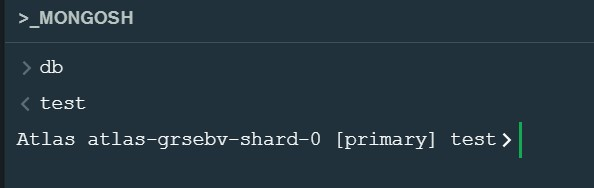
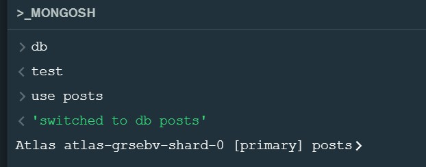
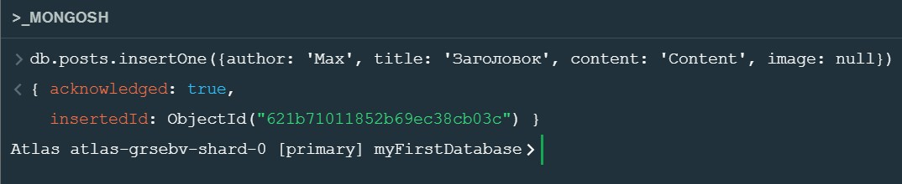
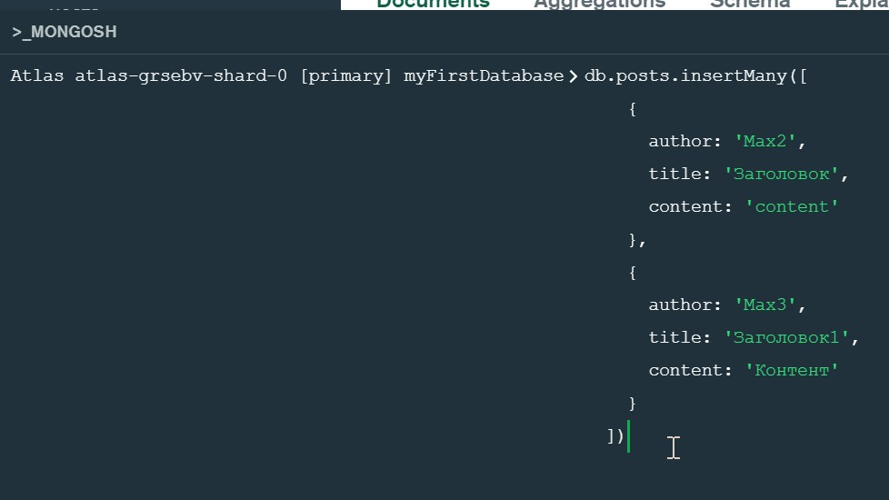
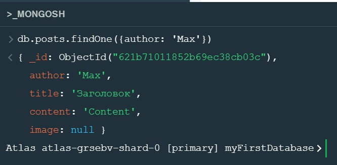
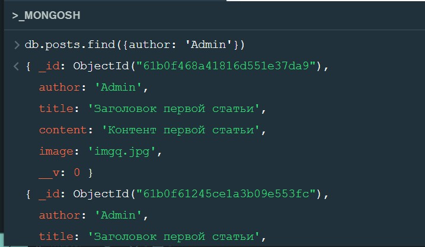
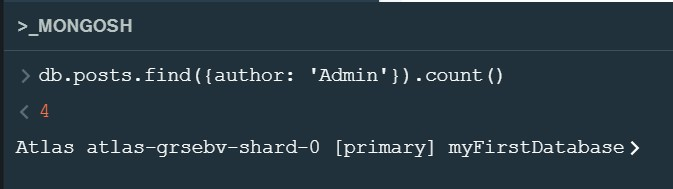
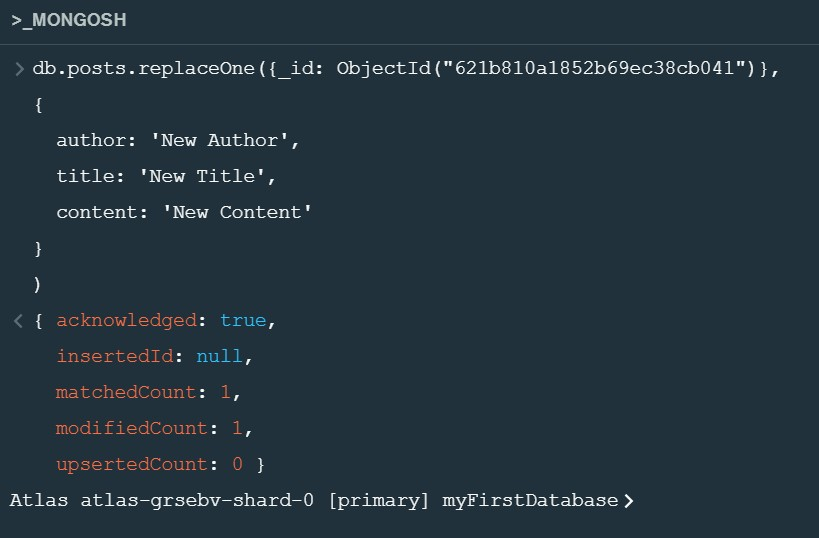
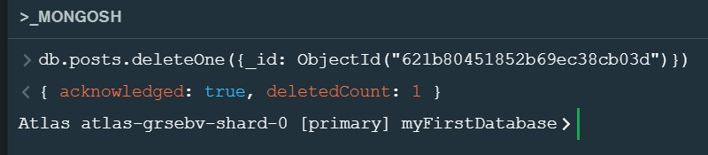
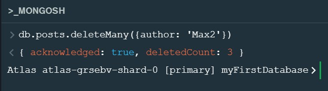

При запуске оболочка подключается по умолчанию к базе данных test и присваивает это подключение к глобальной переменной оболочки db
При вызове в mongo shell команды db мы получае имя базы данных к которой осуществленно подключение
Что бы поменять дефолтное подключение используется оператор use
Если базы с таким именем нет, то она будет создана
Для добавления одной записи в коллекцию используется оператор insertOne
Для добавления разом несколько записей используется метод insertMany. В качестве аргумента он принимает массив JavaScript объектов, которые впоследствии будут документами коллекции.
Для поиска одного документа используется метод findOne. В качестве аргумента передается объект с фильтрами. Если фильтру соответствует несколько документов коллекции, будет возвращен первый попавшийся документ коллекции.
Для получения несколькиз записей в виде массива, используется метод find
Для получения количества записей используется метод count
Для замены записи используется метод replaceOne. В качестве первого аргумента метод ожидает объект фильтра, в качестве второго ожидает JavaScript объект, который заменит документ, соответствующий фильтру.
Для удаления одной записи используется метод deleteOne. В качестве аргумента передается объект с фильтром документа. Если условиям фильтра отвечают несколько документов коллекции, то будет удален первый найденный документ
Для удаления разом несколько записей используется метод deleteMany
Для удаления ВСЕХ документов коллекции используется метод drop